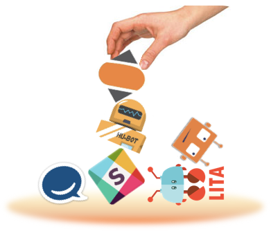
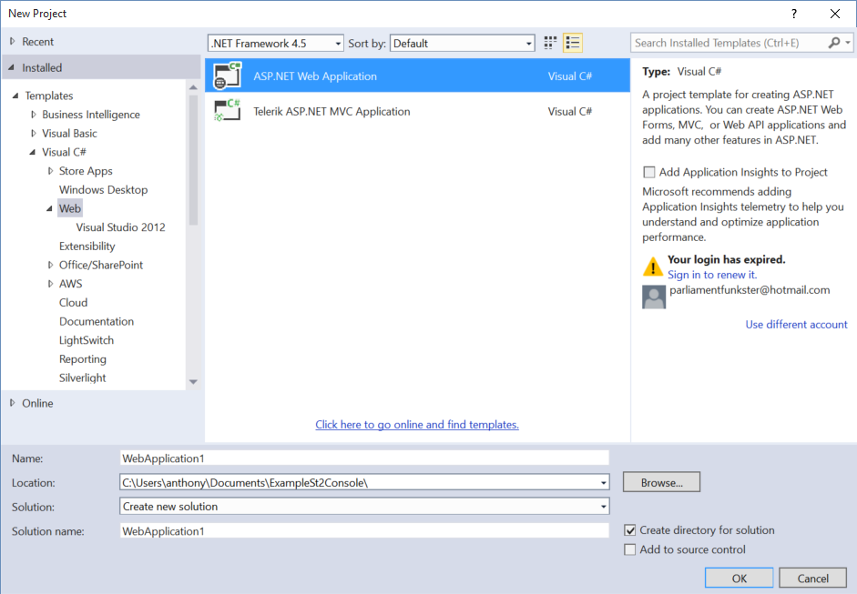
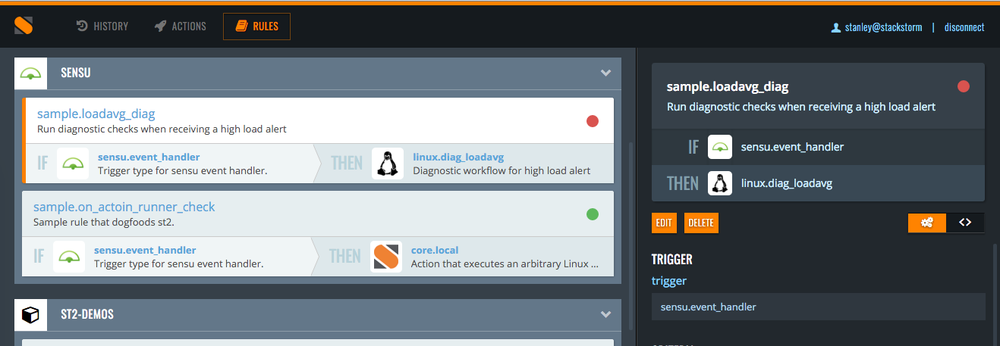

December 11, 2015
by Dmitri Zimine
You are starting with ChatOps.
You have already watched Jesse Newland, Mark Imbriaco and our own James Fryman and Evan Powell preaching it. You’ve read the links on reddit, and skimmed ChatOps blogs from PagerDuty and VictorOps. You’ve studied ChatOps for Dummies…
Congratulation and welcome to the journey, ChatOps is awesome way to run development and operations. I’ll spare repeating why ChatOps is good – you’ve eager to get going. I’d rather focus on few common pitfalls and misconceptions that can get you off the track.

December 8, 2015
by Manas Kelshikar
The holidays are upon us and we decided to celebrate with our v1.2.0 release of StackStorm! StackStorm v1.2.0 follows up as an update to our blockbuster v1.1.0.
StackStorm 1.2 features significant changes to ChatOps, some smaller improvements and plenty of bug fixes. Lets walk through some of the highlights –
The ChatOps changes are so extensive that we decided to dedicate a separate blog here. Once users familiarized themselves with StackStorm-powered ChatOps we received excellent feedback which has been translated into some of the improvements in this release.
The major theme is extending further your control of your ChatOps and especially what is presented in your precious chat real-estate. We commercially support ChatOps – and we think improve it greatly versus rolling your own flavor of a bot or directly connecting more and more integrations to chat.
While we were at it we also took the liberty of reworking some StackStorm internals to better suit ChatOps needs thus enabling some of the features and opening up the door for many more future improvements.READ MORE…
December 8, 2015
by Edward Medvedev
ChatOps — a concept where a chat bot acts as a control plane for your operations — has always been a core part of StackStorm. It adds context to your actions, automates routine tasks nobody likes, helps team members communicate better and learn from each other, and sometimes it’s just plain fun. If you’re new to this, check out the DevOps Next Steps talk by James Fryman, and if you’ve been writing Eggdrop scripts in IRC since you were five but never used it in your daily operations, you might also get inspired from the ChatOps at GitHub talk by Jesse Newland.
Today, we’re all excited to introduce — as a part of our 1.2.0 release — a completely revamped ChatOps feature list. If you’re already using our Hubot integration to execute StackStorm actions from chat, stop doing whatever it is you’re doing and update! If not, it’s a good time to get started: ChatOps is the way of the future, now more than ever.
December 2, 2015
by Patrick Hoolboom
On the latest Automation Happy Hour we talked with engineers from Netflix about auto-remediation. A good portion of the discussion was around how to get started. This got me thinking that I should probably take a moment to go over this topic a bit.
People tend to overanalyze auto-remediation. It seems there is a mentality that they must automate away all of their problems on day one. This type of thinking frequently leads to analysis paralysis. They deadlock on trying to decide what to automate. In this article I am going to outline two of the best ways I have found to get people started in auto-remediation. Facilitated troubleshooting and simple monitoring events.
Auto-remediation is more than a band-aid for poorly implemented infrastructure or applications. Servers go down, processes hang, outages happen. It provides a significant reduction in time to resolution and allows the team to focus more on root cause analysis to prevent future outages. It helps alleviate pager fatigue and let’s people focus more on the important task of improving the applications or infrastructure. Leveraging an event driven automation platform such as StackStorm also gives better visibility into what is and isn’t working in your process. Let the machines mitigate the event so you can focus on making sure it doesn’t happen again.READ MORE…
November 26, 2015
by Anthony Shaw of Dimension Data
This tutorial will show you how to leverage the power of the StackStorm API to expose your fantastic new workflows built using the Flow (available to Enterprise Edition uses) by following one of the blogs.
In our fictional scenario, we have built 2 complex workflows.
We want to provide our technical operations team with a really simple UI where they can just click these buttons and we hide the magic behind the scenes.
First off, this is a tutorial for ASP.NET 4.5, MVC 5 and WebAPI 2.0, the latest Microsoft Web Development toolkit.
If you want to use another stack, you can follow the patterns here to repeat in another language.
Opening up Visual Studio (here I am using 2013, 2015 would also work), select the ASP.NET Web Application template

When prompted, pick out the Single Page Application option, this will install a whole smorgasbord of web-development tools.READ MORE…
November 21, 2015
by Evan Powell
This week two excellent engineers at Netflix spoke at the Event Driven Automation meet-up which Netflix hosted. It was great to see old friends and thought leaders from Cisco, Facebook, LinkedIn and elsewhere. This blog summarizes Netflix’s presentation.
My quick summary is that it was the best presentation I’ve seen that combines both solid reasoning about why to move towards auto-remediation as well as information about how to do so.
Before we get to all that substance, however, I should admit that my favorite moment of the evening was probably when they explained why Netflix calls auto-remediation based on StackStorm “Winston.” Remember Mr Wolf?
November 20, 2015
by Evan Powell
Tuesday the 1st at 10am we’ll be talking event driven automation and specifically auto-remediation with our friends at Netflix.
We’re really happy Sayli Karmarkar and Jean-Sebastien Jeannotte are joining in, willing to take all manner of automation, StackStorm and Netflix and specifically Cassandra (DataStax) questions. As in “why don’t they talk auto remediation in House of Cards?” haha.
Sayli and JS are directly responsible for Cassandra (DataStax) operations at Netflix as well as building and running what they call Winston, their StackStorm based auto-remediation as a service offering at Netflix. So come armed with Cassandra (DataStax) questions too.
As you’ll see the format is a Google Hangout. Our own DoriftoShoes (aka “Patrick”) will take questions as well – you can share them then via the hangout once it starts or via twitter through #AskAnAutomator. Feel free to bring your #badauto scenarios as in “a friend of mine said one time their automation pulled all their servers out of the queue on Cyber Monday.” Or, “my ChatBot keeps telling jokes that are not humorous.”
November 16, 2015
by Tomaz Muraus
Slightly more than 2 weeks after the StackStorm v1.1.0 release we are happy to announce that we have just released StackStorm v1.1.1.
As you can guess from the version identifier (since v1.1.0 release we are following semantic versioning), this is minor release which means there are no breaking or backward incompatible changes and the release mostly includes smaller improvements and bug fixes.
November 02, 2015
by Dmitri Zimnie

A new release of StackStorm is out…. and (…drums…) it is version 1.1!
Yes, this is a major release. The product has really come together, so we decided to name it “version 1”. In his recent Hello World blog Evan Powell shared the learnings over two years that become foundation of StackStorm and made it a distinct product. Here I will go over specific feature highlights of version 1, touch on migration path from earlier versions, and point out to StackStorm’s future directions.
October 28, 2015
by Evan Powell
Time flies.
Over two years ago we got StackStorm going. And today we announce the general availability of StackStorm, both the Enterprise Edition and the Community Edition.
We have made StackStorm generally available because it is now ready, having proven itself at Netflix, WebEx and with thousands of other users. Maybe more importantly, we are announcing general availability because we are ready, with commercial license subscriptions, 24×7 support, and more.
We’ve learned a lot over the last couple of years thanks to countless conversations with automators and operators and thanks to discussions amongst what I strongly believe is the best core technical team in the overall DevOps market. All that learning shows up in StackStorm – a solution that is different than earlier automation in a number of ways: